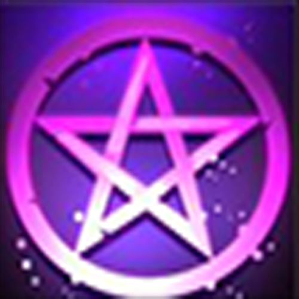
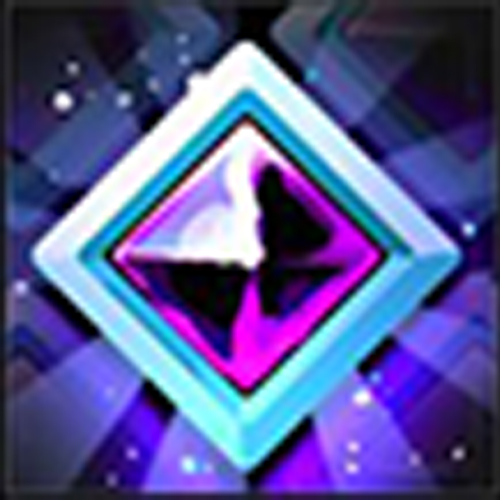
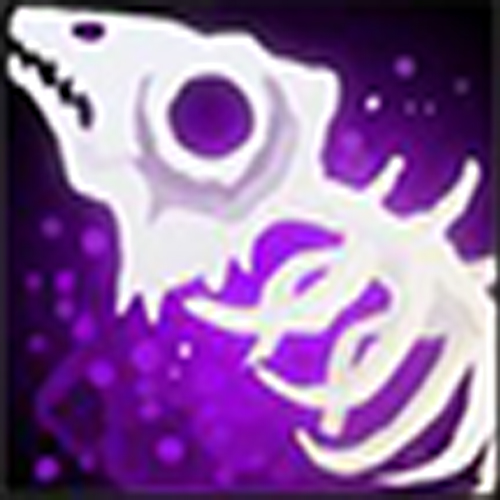
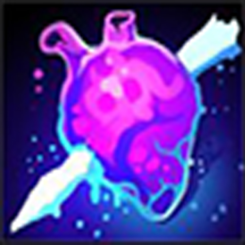
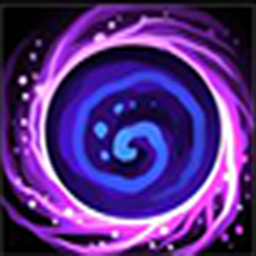

Voltar

Nero, o Drow Necromante
Em breve...
Identidade
Nome: Nero Greyrattus
Idade: 18 Anos
Altura: 1.70 m
Gênero: Masculino
Classe: Necromante
Raça: Drow (Elfo Negro)
Pontos de personagem
Vida: 21 HP
Level: 2
Experiência: 50 / 550
Sanidade: 55%
Personalidade
Depressivo, vazio, vingativo.
Caótico e Neutro (??)
Motivaçoes: Abusos e violências sofridas na infância.
Inspiraçoes: Lolth, A Deusa das Aranhas
Defeitos: Necrófilo, Antissocial, não confia em ninguém.
Objetivo: Servir a Lolth com sua vida.
Exemplos:
Modificador: [-x] ou [+x]
Bônus Raça: {x}
• FORÇA: 1 (-5)
• CONTITUIÇÃO: 6 (-2)
• DESTREZA: 10 (0)
• INTELIGÊNCIA: 20 {2} (+5)
• SABEDORIA: 15 {1} (+2)
• CARISMA: 1 (-5)
• Kyone Veldrin
{Passiva} (Raça)

Os elfos negros estudam as artes das sombras para surpreender o inimigos.
Nero consegue sentir os locais e ações de seus inimigos, mesmo na escuridão total, e atacá-los sem
debuff, mesmo quando efetivamente cegos.
• Iron Maiden Lvl 1
{Passiva}

Aprisiona 1/4° do dano causado ao inimigo, prendendo as almas no pingente do seu colar,
consome-as para usar
ao seu favor.
A cada 25 Almas armazenadas, recebe 1 Ponto de Sobrevida.
2 Almas
Consome as almas para criar um escudo de energia vital que protege em 1 Pontos de Vida contra todos os tipos de dano. {Acumulativo}
16 Almas
Reduz 1 ponto de mana de todas as habilidades por 2 turnos.
32 Almas
Bonifica a próxima habilidade aumentando e +1 todos os dados rolados.
64 Almas
Reduz em 100% custo de mana da próxima habilidade utilizada.
120 Almas
Recebe permanentemente 5 Pontos de Vida.
• Invocação das Sombras
Lvl 1
?? Mana
Invoca um lobo de aspectos sombrios com investida.
Pontos de Vida: 1
Dano: 1d6
• Drenar Energia Vital Lvl 1
?? Mana
 O necromante suga parte da essência vital de um ser, usando para regenerar seu próprio
corpo.
Causa 1d8 de dano necrótico e recupera pontos de vida equivalente ao dano causado.
• Mãos Putrefadas Lvl 1
?? Mana
Conjura das Terras dos Putrafados mãos de mortos-vivos que agarram as pernas de
1 alvo.
Duração: 1 turno.

Historia
Minha história começa ainda quando a Grande Guerra Leviana acontecia.
Nasci da necessidade de amor em uma época marcada por uma guerra devastadora.
O feiticeiro chamava-se Gustthav, enviado à guerra por ordens do Arauto dos Feiticeiros para escoltar
comboios de suprimentos à linha de frente.
Gustthav era um prodígio em feitiçaria, mestre em feitiços de alto nível, e ocupava o posto de vice-líder do
grupo.
Já Mikhai'la, minha mãe, era uma simples camponesa de Hosakku, um vilarejo estratégico para o império, servindo como ponto de distribuição de suprimentos e abrigo médico.
Assim que o pelotão de feiticeiros chegou ao vilarejo, as camponesas os receberam, e assim meus pais se conheceram.
Os dois começaram a se encontrar e conversar nos dias em que o feiticeiro estava no vilarejo.
Em uma dessas ocasiões, eu fui concebido, num momento em que eles se permitiram viver o amor, cientes da incerteza do futuro devido à guerra.
Nasci em meio ao caos, mas por um breve período, minha família foi feliz.
Meu pai partia em missões perigosas, mas sempre retornava, até que um dia não voltou mais.
As notícias da frente de batalha eram escassas e confusas.
Mikhai'la, com o coração em pedaços, decidiu me criar sozinha, protegendo-me das incertezas do mundo exterior.
Quando eu tinha cinco anos, a guerra chegou ao nosso vilarejo.
Soldados e criaturas das trevas invadiram Hosakku, eu e minha mãe ficamos escondidos em casa, porém de nada adiantou.
Lembro-me de vê-la pela última vez, sua figura forte e determinada, antes que tudo se tornasse um borrão de caos e destruição.
Fomos levados por forças além da minha compreensão para uma terra amaldiçoada, um lugar que um dia foi fértil e cheio de vida, mas agora estava tomado pela putrefação e maldade.
A magia negra permeava o ar, transformando tudo ao seu redor.
Foi ali que minha humanidade começou a se esvair, e meu corpo e alma foram corrompidos.
Fui atraído pela Deusa das Aranhas, Lolth, cuja presença sentia em cada sombra e sussurro ao meu redor.
Cresci nas sombras de Menzoberranzan, adaptando-me ao novo mundo.
Com o tempo, descobri meus poderes necromânticos, uma habilidade que parecia inerente à escuridão que agora me envolvia.
No começo eu achei que tudo isso era uma maldição, mas agora entendo que essa transformação, na verdade é uma benção, concedida pela divindade Lolth que, por algum motivo, decidiu me acolher como um fiel adorador me transformando em um Drow, um elfo negro.
Agora, após ter escapado das Terras dos Putrefados, vago pelas Terras de Mitrael, em busca de aumentar meu poder, fortuna e espalhar a palavra de Lolth.
A dor dos vivos é o meu deleite, e seus gritos, meu alimento.
Tolos aqueles que imploram-me por misericórdia, a morte é o único abrigo que encontrarão.